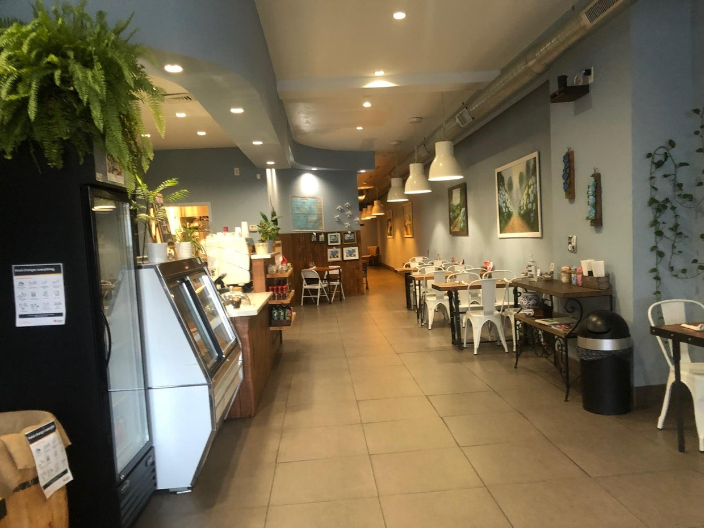

Sandes
Butter, cheese, and chorizo on bread. The kind of simple item a phone visitor should find instantly.
A customer should land on menu, hours, delivery, and directions. Not a domain-for-sale page. This preview shows the kind of fast, simple site that could replace the dead end.

Pick the safest domain path and make every listing point to it.
Mobile-first sections for specials, delivery, catering, and directions.
Hosting, backups, simple edits, and no mystery subscription stack.
“Excellent pastéis and octopus. Authentically Portuguese.”